Лабораторная часть. Платформа для фитнес-тренировок и здоровья.
Задание:
- Реализовать модель базы данных средствами DjangoORM (согласовать с преподавателем на консультации).
- Реализовать логику работу API средствами Django REST Framework (используя методы сериализации).
- Подключить регистрацию / авторизацию по токенам / вывод информации о текущем пользователе средствами Djoser.
База данных:
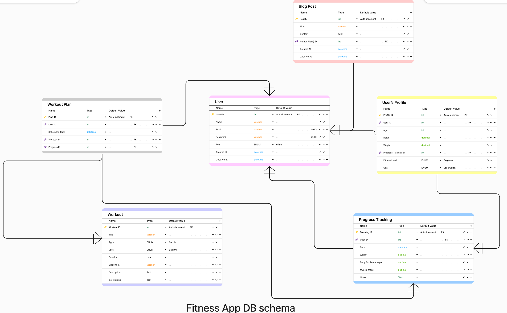
Модели:
# 1. User (Пользователь)
class User(AbstractUser):
ROLE_CHOICES = [
('client', 'Client'),
('trainer', 'Trainer'),
]
email = models.EmailField(max_length=255, unique=True)
password = models.CharField(max_length=255)
full_name = models.CharField(max_length=100)
role = models.CharField(max_length=10, choices=ROLE_CHOICES)
created_at = models.DateTimeField(auto_now_add=True)
updated_at = models.DateTimeField(auto_now=True)
USERNAME_FIELD = 'username'
REQUIRED_FIELDS = ['email']
def __str__(self):
return self.full_name
# 2. Profile (Профиль пользователя)
class Profile(models.Model):
FITNESS_LEVEL_CHOICES = [
('beginner', 'Beginner'),
('intermediate', 'Intermediate'),
('advanced', 'Advanced'),
]
user = models.OneToOneField(User, on_delete=models.CASCADE, related_name='profile')
age = models.IntegerField()
height = models.DecimalField(max_digits=5, decimal_places=2)
weight = models.DecimalField(max_digits=5, decimal_places=2)
fitness_level = models.CharField(max_length=15, choices=FITNESS_LEVEL_CHOICES)
goals = models.TextField()
progress = models.TextField(blank=True)
def __str__(self):
return f"{self.user.full_name}'s Profile"
# 3. Workout (Тренировка)
class Workout(models.Model):
WORKOUT_TYPE_CHOICES = [
('cardio', 'Cardio'),
('strength', 'Strength'),
('stretching', 'Stretching'),
('flexibility', 'Flexibility'),
]
LEVEL_CHOICES = [
('beginner', 'Beginner'),
('intermediate', 'Intermediate'),
('advanced', 'Advanced'),
]
title = models.CharField(max_length=255)
type = models.CharField(max_length=20, choices=WORKOUT_TYPE_CHOICES)
level = models.CharField(max_length=15, choices=LEVEL_CHOICES)
duration = models.TimeField()
video_url = models.URLField(max_length=255)
description = models.TextField()
instructions = models.TextField()
def __str__(self):
return self.title
# 4. Workout_Plan (План тренировок)
class WorkoutPlan(models.Model):
user = models.ForeignKey(User, on_delete=models.CASCADE, related_name='workout_plans')
workout = models.ForeignKey(Workout, on_delete=models.CASCADE, related_name='workout_plans')
scheduled_date = models.DateField()
def __str__(self):
return f"Plan for {self.user.full_name} on {self.scheduled_date}"
# 5. Blog_Post (Пост в блоге)
class BlogPost(models.Model):
title = models.CharField(max_length=255)
content = models.TextField()
author = models.ForeignKey(User, on_delete=models.CASCADE, related_name='blog_posts')
created_at = models.DateTimeField(auto_now_add=True)
updated_at = models.DateTimeField(auto_now=True)
def __str__(self):
return self.title
# 6. Progress_Tracking (Отслеживание прогресса)
class ProgressTracking(models.Model):
user = models.ForeignKey(User, on_delete=models.CASCADE, related_name='progress_tracking')
date = models.DateField()
weight = models.DecimalField(max_digits=5, decimal_places=2)
body_fat_percentage = models.DecimalField(max_digits=5, decimal_places=2)
muscle_mass = models.DecimalField(max_digits=5, decimal_places=2)
notes = models.TextField(blank=True)
def __str__(self):
return f"Progress on {self.date} for {self.user.full_name}"
Представления:
# Пользователи
class UserListAPIView(ListAPIView):
queryset = User.objects.all()
serializer_class = UserSerializer
class UserCreateView(APIView):
def post(self, request):
user_data = request.data
serializer = UserSerializer(data=user_data)
if serializer.is_valid(raise_exception=True):
user_saved = serializer.save()
return Response(
{"Success": f"User '{user_saved.name}' created successfully."}
)
class UserDeleteView(DestroyAPIView):
queryset = User.objects.all()
serializer_class = UserSerializer
class UserUpdateView(UpdateAPIView):
queryset = User.objects.all()
serializer_class = UserSerializer
# Профили
class ProfileListAPIView(ListAPIView):
queryset = Profile.objects.all()
serializer_class = ProfileSerializer
class ProfileCreateAPIView(APIView):
def post(self, request):
profile_data = request.data
serializer = ProfileSerializer(data=profile_data)
if serializer.is_valid(raise_exception=True):
profile_saved = serializer.save()
return Response(
{"Success": f"Profile for {profile_saved.user.name} created successfully."}
)
class ProfileUpdateAPIView(UpdateAPIView):
queryset = Profile.objects.all()
serializer_class = ProfileSerializer
class ProfileDeleteAPIView(DestroyAPIView):
queryset = Profile.objects.all()
serializer_class = ProfileSerializer
# Тренировки
class WorkoutListAPIView(ListAPIView):
queryset = Workout.objects.all()
serializer_class = WorkoutSerializer
class WorkoutCreateAPIView(APIView):
def post(self, request):
workout_data = request.data
serializer = WorkoutSerializer(data=workout_data)
if serializer.is_valid(raise_exception=True):
workout_saved = serializer.save()
return Response({"Success": f"Workout '{workout_saved.title}' created successfully."})
class WorkoutUpdateAPIView(UpdateAPIView):
queryset = Workout.objects.all()
serializer_class = WorkoutSerializer
class WorkoutDeleteAPIView(DestroyAPIView):
queryset = Workout.objects.all()
serializer_class = WorkoutSerializer
# Планы тренировок
class WorkoutPlanListAPIView(ListAPIView):
queryset = WorkoutPlan.objects.all()
serializer_class = WorkoutPlanSerializer
class WorkoutPlanCreateAPIView(APIView):
def post(self, request):
workout_plan_data = request.data
serializer = WorkoutPlanSerializer(data=workout_plan_data)
if serializer.is_valid(raise_exception=True):
workout_plan_saved = serializer.save()
return Response(
{"Success": f"Workout Plan for {workout_plan_saved.user.name} created successfully."}
)
class WorkoutPlanUpdateAPIView(UpdateAPIView):
queryset = WorkoutPlan.objects.all()
serializer_class = WorkoutPlanSerializer
class WorkoutPlanDeleteAPIView(DestroyAPIView):
queryset = WorkoutPlan.objects.all()
serializer_class = WorkoutPlanSerializer
# Посты блога
class BlogPostListAPIView(ListAPIView):
queryset = BlogPost.objects.all()
serializer_class = BlogPostSerializer
class BlogPostCreateAPIView(APIView):
def post(self, request):
blogpost_data = request.data
serializer = BlogPostSerializer(data=blogpost_data)
if serializer.is_valid(raise_exception=True):
blogpost_saved = serializer.save()
return Response({"Success": f"BlogPost '{blogpost_saved.title}' created successfully."})
class BlogPostUpdateAPIView(UpdateAPIView):
queryset = BlogPost.objects.all()
serializer_class = BlogPostSerializer
class BlogPostDeleteAPIView(DestroyAPIView):
queryset = BlogPost.objects.all()
serializer_class = BlogPostSerializer
# Прогресс-трекинг
class ProgressTrackingListAPIView(ListAPIView):
queryset = ProgressTracking.objects.all()
serializer_class = ProgressTrackingSerializer
class ProgressTrackingCreateAPIView(APIView):
def post(self, request):
progress_tracking_data = request.data
serializer = ProgressTrackingSerializer(data=progress_tracking_data)
if serializer.is_valid(raise_exception=True):
progress_tracking_saved = serializer.save()
return Response(
{"Success": f"Progress Tracking for {progress_tracking_saved.user.name} created successfully."}
)
class ProgressTrackingUpdateAPIView(UpdateAPIView):
queryset = ProgressTracking.objects.all()
serializer_class = ProgressTrackingSerializer
class ProgressTrackingDeleteAPIView(DestroyAPIView):
queryset = ProgressTracking.objects.all()
serializer_class = ProgressTrackingSerializer
# Вся информация о пользователе
class UserDetailAPIView(RetrieveAPIView):
queryset = User.objects.all()
serializer_class = UserDetailSerializer
Эдпойты:
urlpatterns = [
# User
path('users/', UserListAPIView.as_view(), name='user-list'),
path('users/create/', UserCreateView.as_view(), name='user-create'),
path('users/<int:pk>/delete/', UserDeleteView.as_view(), name='user-delete'),
path('users/<int:pk>/update/', UserUpdateView.as_view(), name='user-update'),
path('users/<int:pk>/', UserDetailAPIView.as_view(), name='user-detail'),
# Профили
path('profiles/', ProfileListAPIView.as_view(), name='profile-list'),
path('profiles/create/', ProfileCreateAPIView.as_view(), name='profile-create'),
path('profiles/<int:pk>/update/', ProfileUpdateAPIView.as_view(), name='profile-update'),
path('profiles/<int:pk>/delete/', ProfileDeleteAPIView.as_view(), name='profile-delete'),
# Тренировки
path('workouts/', WorkoutListAPIView.as_view(), name='workout-list'),
path('workouts/create/', WorkoutCreateAPIView.as_view(), name='workout-create'),
path('workouts/<int:pk>/update/', WorkoutUpdateAPIView.as_view(), name='workout-update'),
path('workouts/<int:pk>/delete/', WorkoutDeleteAPIView.as_view(), name='workout-delete'),
# Посты блога
path('blogposts/', BlogPostListAPIView.as_view(), name='blogpost-list'),
path('blogposts/create/', BlogPostCreateAPIView.as_view(), name='blogpost-create'),
path('blogposts/<int:pk>/update/', BlogPostUpdateAPIView.as_view(), name='blogpost-update'),
path('blogposts/<int:pk>/delete/', BlogPostDeleteAPIView.as_view(), name='blogpost-delete'),
# WorkoutPlan
path('workout-plans/', WorkoutPlanListAPIView.as_view(), name='workout-plan-list'),
path('workout-plans/create/', WorkoutPlanCreateAPIView.as_view(), name='workout-plan-create'),
path('workout-plans/<int:pk>/update/', WorkoutPlanUpdateAPIView.as_view(), name='workout-plan-update'),
path('workout-plans/<int:pk>/delete/', WorkoutPlanDeleteAPIView.as_view(), name='workout-plan-delete'),
# ProgressTracking
path('progress-tracking/', ProgressTrackingListAPIView.as_view(), name='progress-tracking-list'),
path('progress-tracking/create/', ProgressTrackingCreateAPIView.as_view(), name='progress-tracking-create'),
path('progress-tracking/<int:pk>/update/', ProgressTrackingUpdateAPIView.as_view(), name='progress-tracking-update'),
path('progress-tracking/<int:pk>/delete/', ProgressTrackingDeleteAPIView.as_view(), name='progress-tracking-delete'),
]
Пример работы эдпойнтов: 1. Выводим всех пользователей:
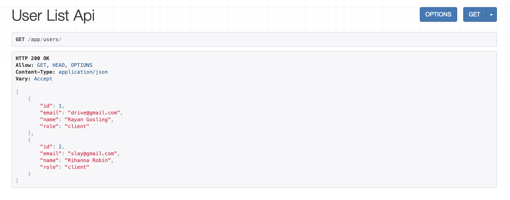
2. Выводим все профили пользователей: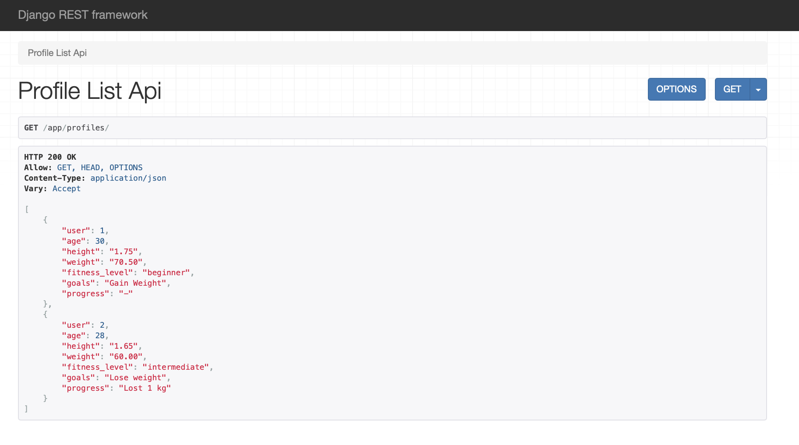
3. Выводим все тренировки: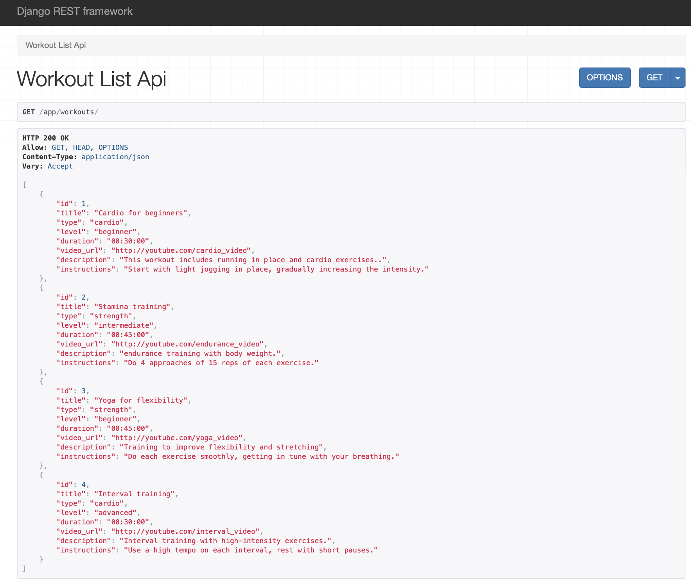
4. Выводим все посты: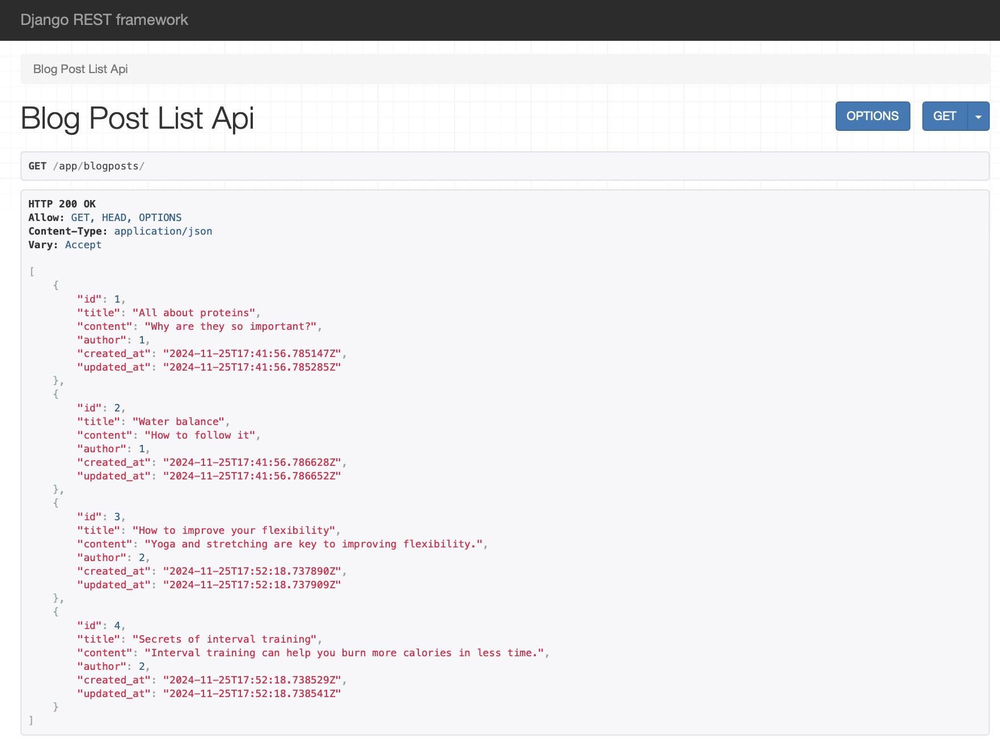
5. Выводим все планы тренировок: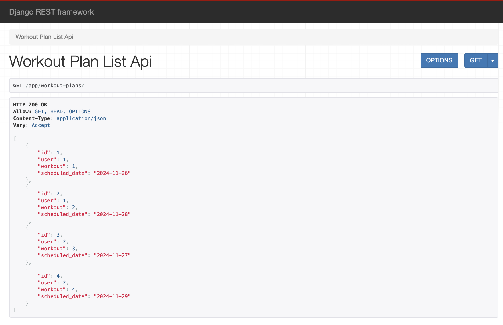
6. Выводим все изменения прогресса: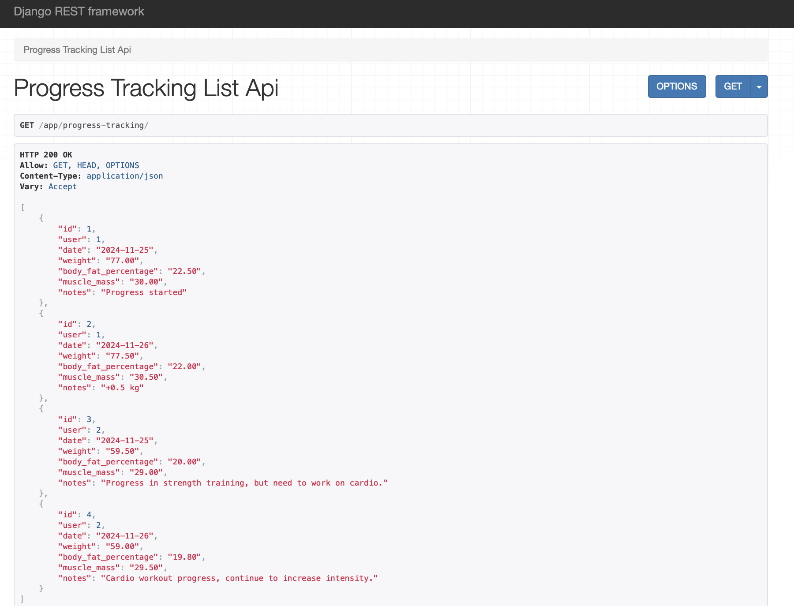
7. Выводим всю информацию, связанную с пользователем (его тренировки, его посты, его прогресс)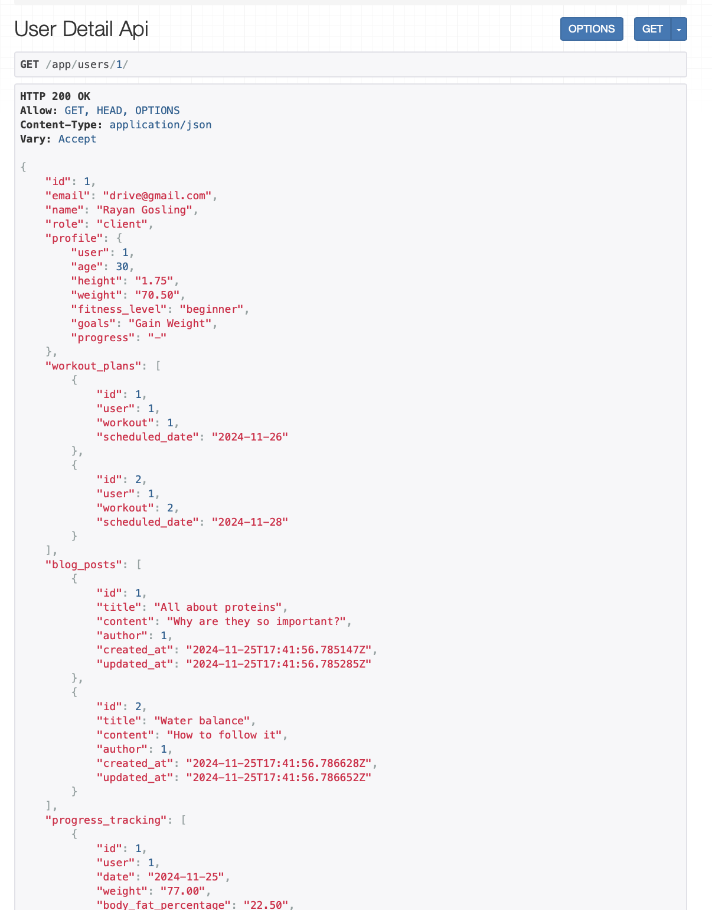
8. Редактирование информации на примере постов: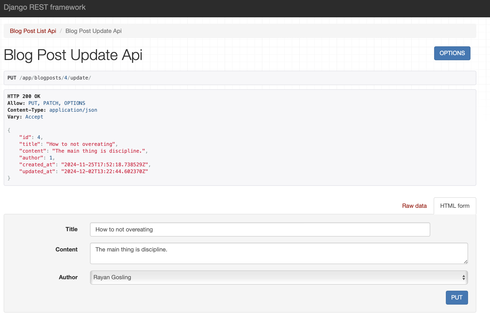
9. Удаление информации на примере постов: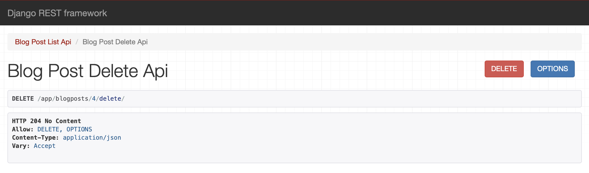
Подключение регистрации и вывод информации по токенам:
Загружаем djoser и добавляем его в настройки:
DJOSER = {
'TOKEN_MODEL': 'rest_framework.authtoken.models.Token',
'SERIALIZERS': {
'user_create': 'fitnessapp.serializers.UserSerializer', # Кастомный сериализатор
'user': 'fitnessapp.serializers.UserSerializer',
'current_user': 'fitnessapp.serializers.UserSerializer',
},
'PASSWORD_RESET_CONFIRM_URL': '#/password/reset/confirm/{uid}/{token}',
'USERNAME_RESET_CONFIRM_URL': '#/username/reset/confirm/{uid}/{token}',
'ACTIVATION_URL': '#/activate/{uid}/{token}',
'SEND_ACTIVATION_EMAIL': False,
'USER_CREATE_PASSWORD_RETYPE': True,
}
Также в urls добавляем новые эдпойнты:
urlpatterns = [
path("admin/", admin.site.urls),
path("app/", include("fitnessapp.urls")),
path('auth/', include('djoser.urls')),
re_path('auth/', include('djoser.urls.authtoken')),
]
Далее процесс регистрации/авторизации/вывод информации о пользователе будет показан в Postman:
- Сначала прописываем http://127.0.0.1:8000/auth/users/ и делаем пост-запрос, вводя все необходимые данные для регистрации пользователя:
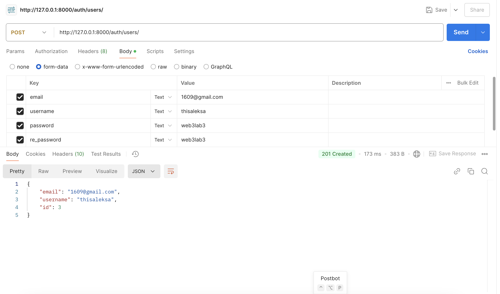
- Затем авторизуемся также через пост-запрос http://127.0.0.1:8000/auth/token/login : вводим юзернейм и пароль, получаем токен:
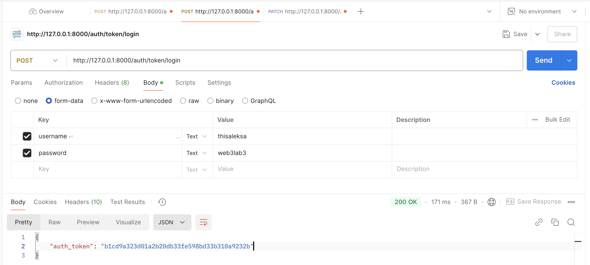
- Наконец выведем информацию о пользователе по гет-запросу http://127.0.0.1:8000/auth/users/me/ предварительно прописав в Headers - Authorization и вставив пользовательский токен. Поля full-name и role у меня не обязательны при регистрации, заполним их с помощью patch:
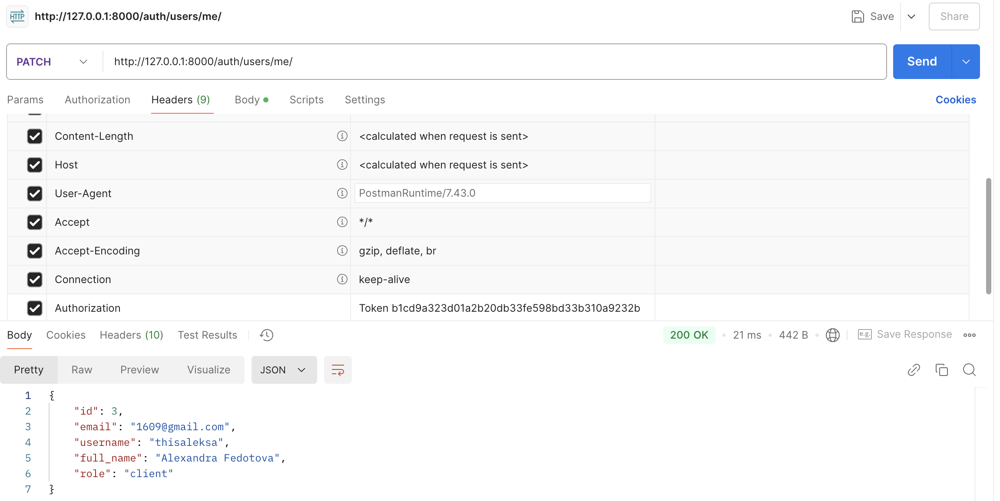